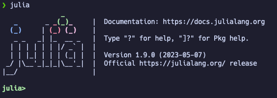
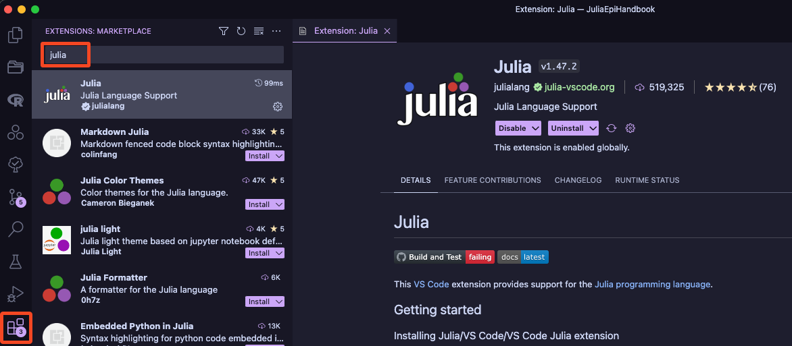
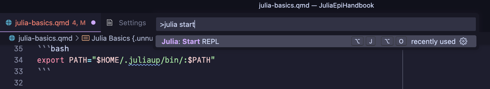
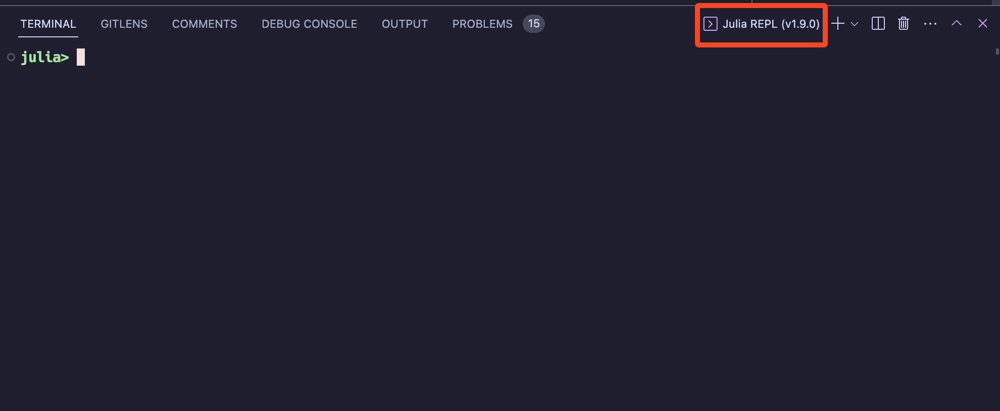
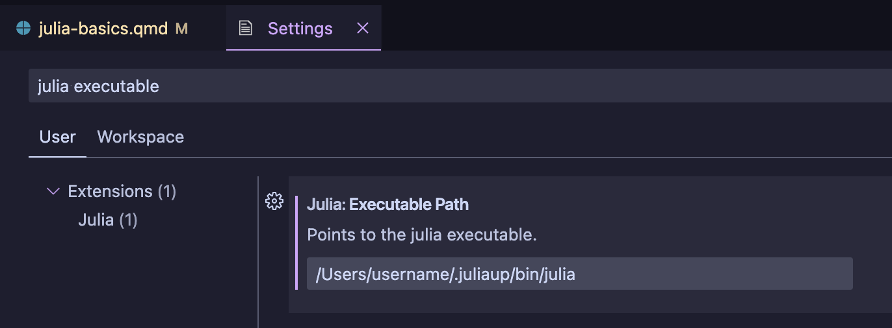

Setting Up Julia
![]()
Key Terms
- VSCode: Visual Studio Code is a very popular open source code editor. It is free and available for Windows, Mac, and Linux. It is also the recommended editor for Julia and is well supported by the Julia community, with a number of extensions available to make the experience even better.
- REPL: The Julia REPL is the Julia Read-Eval-Print-Loop. This is the interactive command line interface for Julia. When you start Julia in the command line (terminal in Mac/Linux, command prompt in Windows), you are in the REPL, and it is a common way to interact with Julia.
- Package: A package is a collection of code that can be used to extend the functionality of Julia and complete specific tasks. Packages are installed using the
Pkgpackage manager. - Object: An object is anything that you can create using code. This may be as simple as a number or a sentence (a string object), or as complex as a model or a plot.
Installing Julia
The first step to using Julia is to install it on your computer. There are a couple of different methods you can use to do this. The easiest way to get started is to directly download the latest stable Julia release from https://julialang.org/downloads/. This will get you up and running, but will be a bit more difficult to manage in the long run when you want to update Julia to newer versions.
If you are willing to put a tiny bit more effort in to save yourself time later, I would strongly recommend installing Julia using the Juliaup tool. This is a small cross-platform installer that can install Julia, as well as manage multiple versions on your computer, which is incredibly helpful when you want to update to a newer Julia version, or test out a new release candidate without breaking your existing Julia installation. You can find the full instructions here: https://github.com/JuliaLang/juliaup, but in brief, install Juliaup, and then run the following command in your terminal (Mac/Linux) or command prompt (Windows):
juliaup add release # Installs the latest stable release
juliaup default release # Not necessary with only one installed version, but sets the latest stable release as the default Julia versionTo test that Julia has been installed correctly, open a terminal (Mac/Linux) or command prompt (Windows) and type julia. If Julia has been installed correctly, you should see something like the following:

If so, congratulations, you have successfully installed Julia, and you are now in the REPL. You could start working on Julia from here, but we’ll take a quick detour to install VSCode, which will make your life a lot easier. To quit the REPL, type exit() and press enter. You can also type Ctrl + D to exit the REPL.
Trouble Shooting
If your Julia installation could not be found, it is likely an issue with your PATH variable. This is a variable that tells your computer where to look for programs when you type them into the command line. If you used Juliaup to install Julia and you are using a Mac or Linux, you might need to add the following line to your .bashrc or .zshrc file, depending of whether your computer uses bash or zsh.
export PATH="$HOME/.juliaup/bin/:$PATH"If you don’t know if your computer is using bash or zsh, you can check by typing echo $SHELL into the command line. This will print the shell that your computer is using; in my case /bin/zsh. You should also type ls -a ~ into the command line to see if you have an existing .bashrc or .zshrc file. If you do not have either, you can create the one relevant to your computer by typing touch ~/.bashrc or touch ~/.zshrc.
If you are using Juliaup on Windows, and installed using the recommended pathways (Windows store or winget command), you will need to edit your PATH variable using the following the steps detailed here, and make sure you have the following path:
%USERPROFILE%\AppData\Local\Microsoft\WindowsAppsInstalling VSCode
Now you have Julia installed, you need a code editor to write your Julia code in. There are a number of different options available, but the most popular is VSCode. You can download VSCode from https://code.visualstudio.com/download. Once you have VSCode installed, you will need to install the Julia extension. You can do this by opening this link and clicking “Install”, which will redirect you to VSCode to finish the install process. Alternatively, you can open VSCode, click the extensions icon in the left sidebar of VSCode (the one that looks like 4 blocks), and search for “Julia”.

Once you have installed the Julia extension, you’re ready to start writing Julia code!
The first thing you should do is open a Julia REPL within VSCode. To do this, open the VSCode command palette and type “Julia: Start REPL”.
The command palette is a really useful feature of VSCode that allows you to search for and run any command available in VSCode. You can open the command palette by pressing Ctrl + Shift + P on Windows or Linux, or Cmd + Shift + P on Mac. For more tips on how to navigate and use VSCode, see the VSCode documentation.

This will open up a new section in VSCode that contains a Julia REPL within the “Integrated Terminal” of VSCode.

You can give Julia a quick spin by typing 1 + 1 into the REPL and pressing enter.
Trouble Shooting
If your Julia installation could not be found by VSCode, but it works in the terminal, the VSCode Julia extension is having trouble find where Julia is installed.
To fix this, first, find your Julia installation. On Mac or Linux, you can do this by typing which julia into the terminal. On Windows, you can do this by typing where julia into the command prompt.
If you installed Julia using Juliaup, you should see something like the following:
$ which julia
/Users/username/.juliaup/bin/juliaTake the output of this command and paste it into the VSCode settings. To do this, open the VSCode settings by clicking on the cog icon in the bottom left of the VSCode window, and then clicking “Settings”, or by using the command palette to navigate to “Preferences: Open Settings (UI)”. Here, search for “Julia Executable Path” and paste the output of the which/where julia command into the text box. this is a 
The VSCode User Interface
Hopefully at this point you have VSCode installed and the Julia extension working. Now’s let’s get familiar with VSCode itself, that way we can focus on learning Julia in the rest of the book, rather than getting stuck on the editor.
A detailed description of the VSCode user interface is beyond the scope of this book (more details can be found here), but there are a few key features that you should be aware of.
As you can see in the clip above, it is possible to move the main editing blocks around so you can have multiple files open at once (or even multiple views of the same file at different lines of code). Typically, I like to have my code open in one editing block and have the plots display to the right side of the screen.
To the left of the editing blocks is the primary sidebar, which contains a number of different panels. The first one, which I have open, is the “Explorer” panel, which shows the files and folders in the current Workspace. A Workspace in VSCode is a collection of folders and files that you want to group together into one project. This is a really useful feature of VSCode as it allows you to also have Workspace-specific settings, which can be useful when working on different projects. To get started with a new Workspace, all you have to do is open a folder in VSCode, as typically it’s a good rule of thumb to have one overarching folder per project. You can do this with Cmd + O on Mac or Ctrl + O on Windows or Linux, or by clicking “File” in the top left of the VSCode window and then clicking “Open Folder”. After doing so, you will see the folder name appear in the top of the “Explorer” panel, with all contained files and folders displayed below.
Further down in the sidebar, you will see there is a logo with three circles (which I click on in the video). This is the Julia extension, and will show you the Julia Workspace at the top, which contains every object that you have run and created. Below that is the Documentation section, which is where can search for and view the documentation for any Julia function or type (as long as the function is within one of the packages you have loaded). Finally, below that is the Plot Navigator section, which is where you can view the list of plots that you have created in Julia, and clicking on a plot number will update the plot viewer appropriately.
At the bottom of the screen, you will see the Integrated Terminal panel, which is where you can run Julia code, as well as the Problems panel, which will show you any errors or warnings that VSCode has detected in your code. Some other tools can be seen here, but they are not particularly important for now.
Finally, at the very bottom of the screen is the Status Bar, which shows you the current branch of your git repository (if you have one), the current Julia environment, and some other miscellaneous information.
One thing you may have noticed in the video is that I used the keyboard shortcut Cmd + P to open different files within my Workspace. This is a really useful shortcut that allows you to quickly navigate to files, but you can also use it to navigate within a file. Typing @ will allow you to navigate to different symbols e.g. functions, variables, headings etc., and typing : will allow you to navigate to a specific line number in the file.
Bonus Set Up
Fonts
If you want to make your code look as good as possible, you should install a font that supports rendering of ligatures and Unicode characters, as Julia often uses them. Ligatures are special characters that are used to combine multiple characters into one. For example, ==> is a ligature that with particular fonts will be rendered as a double arrow ⟹, which can look nicer and be easier to read. Examples of Unicode characters are Greek letters, such as θ, β, γ, σ, δ etc., which are often used in mathematical notation, and because Julia supports Unicode characters, you can use them in your code! This is very useful when coding up some mathematical formulae, as you can use the actual symbols rather than having to write out the name of the symbol (though this is not always recommended as it can make your code harder to read to those unfamiliar with the formulae). If you would like to use Unicode characters in your Julia code (this won’t necessarily work in other non-Julia files), you can start typing with \, before typing the name of the symbol you want to use, and then pressing Tab to complete the symbol. For example, to add the θ symbol, you would type \theta and then press Tab to complete the symbol.
All this being said, JuliaMono is a font designed specifically for Julia, and is a great choice for writing Julia code. You can more information at https://juliamono.netlify.app/, along with detailed installation instructions.